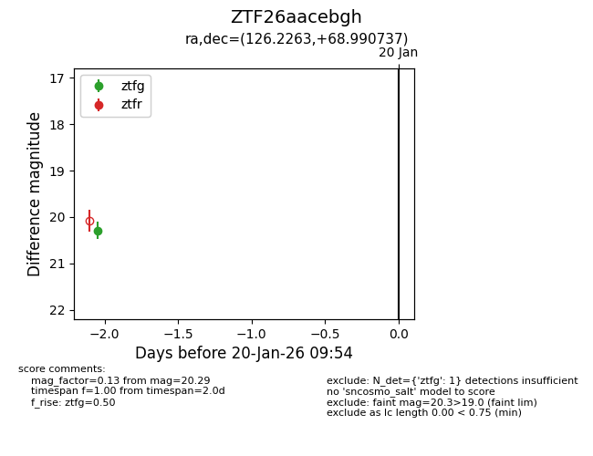
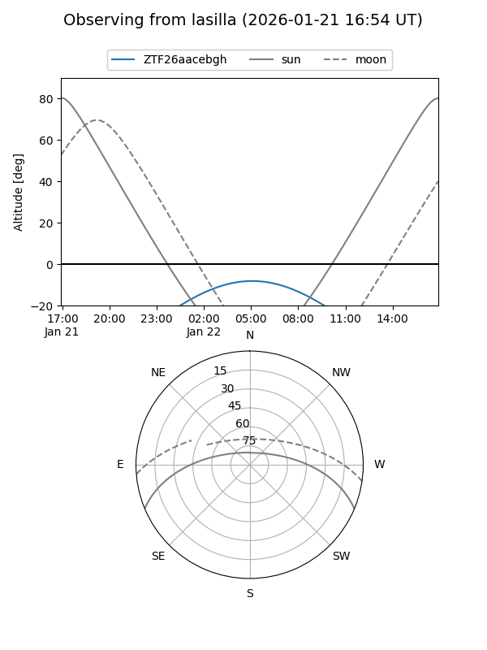
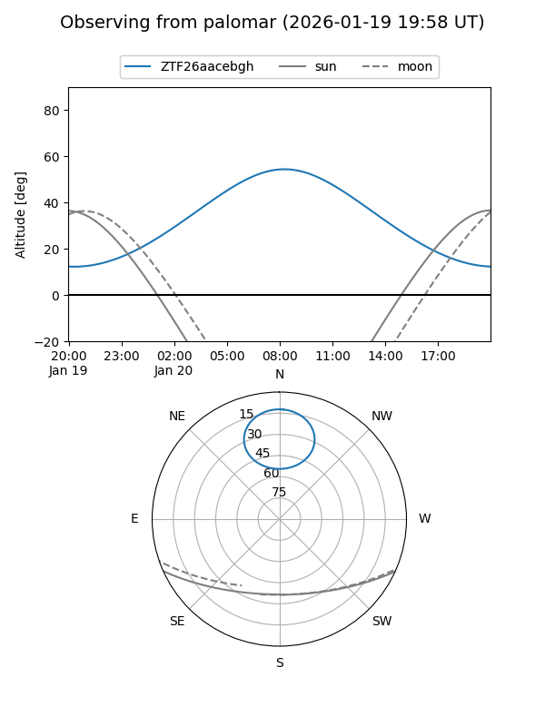
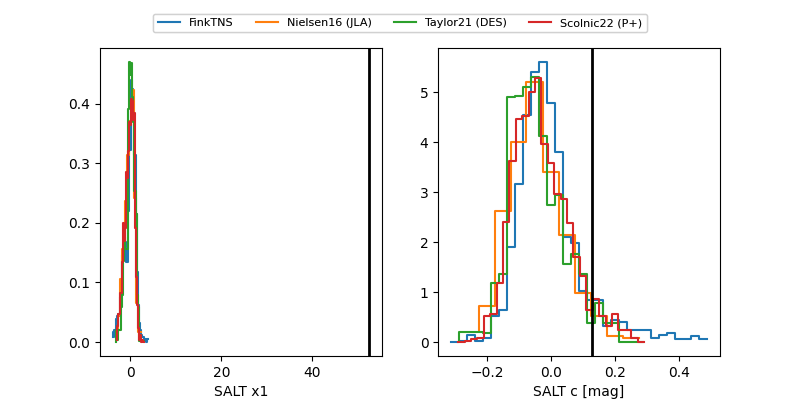

ZTF26aacebgh
Target ZTF26aacebgh at 2026-01-28 08:16
Aliases and brokers:
FINK: link
Lasair: link
ALeRCE: link
alt names
ZTF26aacebgh (ztf,fink_ztf)
Coordinates:
equatorial (ra, dec) = 126.2263,+68.99074
equatorial (HMS+DMS) = 08:24:54.31,+68:59:26.65
galactic (l, b) = (146.1833,+33.51962)
Flags:
Photometry:
last ztfg=20.29, ztfr=19.99
1 ztfg, 2 ztfr detections
Lightcurve

Visibility


Additional plots
